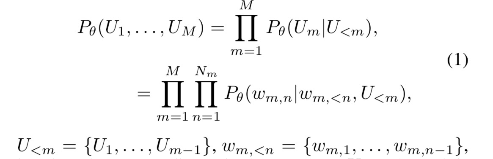
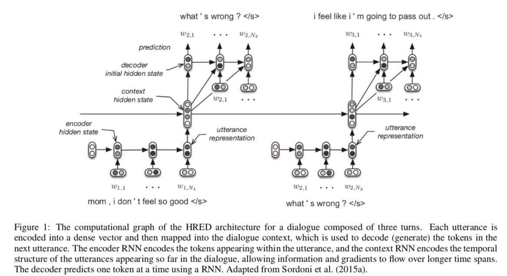

大部分data-driven的对话生成模型都是基于End-to-End model的，但是这种End-to-End model 有其缺点:
- 难以表征多轮对话生成中的上下文信息: 多轮对话中的Context 信息
- 基于极大似然估计为优化目标很容易造成Safe Response problem。
为了更好的利用上下文信息，这篇博客介绍 Hierarchy 模型在Dialogue Generation 的应用，很好的建模了上下文信息。
最早的HRED Model
HRED(Hierarchy Recurrent Encoder Decoder) model 最早是在A Hierarchical Recurrent Encoder-Decoder for Generative Context-Aware Query Suggestion.
这个标题本身就含有了很多信息, HRED 最早提出是为了 Query Generation 考虑的，而Context-aware 这一个词汇也很好的说明了 HRED 的优点: 很好的利用了Context 信息。 在 原始的HRED 中，有两个Level 的信息:
- query level
- word level
HRED model in Dialogue Generation
类比于原始的 HRED model, dialogue generation 也可以从两个 level 来构建 Context 信息:
- utterance level
- word level
在此背景下，一个对话session 可以看成是一个 utterances 的序列，而每一个utterance 是一个 token 的序列:A dialogue is modelled as a sequence of utterances(sub-sequences), and sub-sequences of tokens.
基于此, 可以建模为: 
HRED 模型的结构
HRED 有3 个 RNN models:
- An encoder RNN: 将每一个utterance 都encode 成为一个向量。
- A context RNN: 输入为 将encoder RNN 所得到的向量 和
- A decoder RNN: 输入 Context vector.
但是有以下几点需要注意:
- Encoder RNN 是GRU 结构: 也就是意味着它的输入数量为2, 分别为句子中当前位置的词向量$w_{n, m}$和 上一个时刻的encoder RNN 隐状态 $h^{enc}_{n, m-1}$。
$$ h_{n, 0}^{enc} = 0, h^{enc}{n, m} = f{enc}_{\theta}(h{enc}{n, m-1}, w_{n, m}) \forall m = 1, \cdots, M_m $$
其中, $w_{n, m}$ 代表第 n 个utterance 的第 m 个 word 的词向量
- Context RNN 也是一个GRU 结构: 也就是意味着它的输入数量也是2, 分别为对话轮数当前位置的encoder 的最后的隐向量 $h^{enc}{n, M_n}$ 和 上一个时刻的context RNN 的隐状态: $h^{con}{n-1}$。 $$h_{n, 0}^{con} = 0, h^{con}{n} = f{con}_{\theta}(h{con}{n-1}, h^{enc}_{n})$$
- Decoder RNN : however, 却是一个LSTM 结构, 输入为3个: 上一时刻decoder 的状态: $h^{dec}{n, m-1}$, 输入的词向量: $w{n, m}$, 截止到上一个对话turn 的Context RNN 的状态: $h^{con}{n-1}$。 $$h^{dec}{n, 0} = 0, h^{dec}{n, m} = f{dec}_{\theta}(h{dec}{n, m-1}, w_{n, m}, h^{con}{n-1})$$ 最终的word distribution 就是将 $h^{dec}{n, m}$ 过了一层 MLP 之后得到的。 
VHRED model: HRED model 的改进版本
HRED 依然面临着严峻的Safe Response 问题
看起来 HRED 一切正常，但是 HRED 与 RNNLM 一样会导致safe response problem, 关于safe response, 我同样有相关博客来论述这一问题。 这里放一段VHRED 论文中关于 HRED 和 RNNLM 会导致safe response 的原因的分析:
The Restricted Shallow Generation Process: It has been observed that RNNLM and HRED, and similar models based on RNN architecture, have crucial problems generating meaningful and diverse dialogue response. We believe these problems are caused by the flat sequential generation process followed by RNNLM and HRED, where each word is sampled conditioned only on previous words. We call this a shallow generation process, because only source of variation is modelled through the conditional output distribution.
- This process is problematic from a probabilistic perspective, because the model is forced to generate all high-level structure locally on a step-by-step basis. For example, for generating dialogue responses such a model has to decide the conversation topic in the middle of the generation process-when it is generating the first topic-related word-and, afterwards, for each future word the model will have to decide whether to change or to remain on the same topic. This makes it difficult for the model to generate long-term structure.
- The shallow generation process is also problematic from a computational learning perspective: the state $h_m$ in the RNNLM-or correspondingly the state of the decoder RNN in HRED-has to summarize all the past information up to time step $m$ in order to:
- generate a probable next token(short-term objective).
- occupy a position in embedding space which sustains an ouput trajectory, for generating probable future tokens(long-term objective).
Due to the vanishing gradient effect, the short-term goals will dominate the output distribution. In particular, for sequence with high variability, the models are likely to favor short-term predictions as opposed to long-term predictions, because it is easier to only learn $h_m$ for predicting the next token compared to sustaining a long-term trajactory $h_m, h_{m+1}, h_{m+2}, \cdots,$ which at every time step is perturbed by noisy input(e.g. words given as input).
这里我觉得其给出的 computational learning 角度的分析还是很有道理的, 在生成下一个token的时候，有长期目标和短期目标。短期目标就是产生一个合适的词，长期就是保证当前产生的词汇能够很好的适配到embedding 空间里边(fits the output trajectory well)，保证整个response 是合适的。很显然, 短期目标是很容易满足的, 但是需要完成远大目标的长期目标是很难实现的。
解决 restricted shallow generation 的 VHRED 模型
一定意义上, VHRED 就是为了解决上述问题而出现的。这个模型在 utterance level 引入一个随机隐变量 $z$。VHRED 将response generation 分成两个阶段:
- 随机采样一个隐变量 $z$。
- 生成最终的output sequence。
VHRED 将每一个 utterance 都对应成为 $\mathbf{z}_n \in \mathbb{R}^{d_z}$, for $n = 1, \cdots, N$。VHRED 生成Response 的过程可以分为两个阶段:
- 根据已有的 utterance $\mathbf{w}_{<n}$ 生成 $\mathbf{z}_n$:
$$P_{\theta}(\mathbf{z}n \vert \mathbf{w}{<n})$$
- 根据 $\mathbf{z}{n}$ 及 $\mathbf{w}{<n}$ 生成当前utterance $\mathbf{w}n$: $$P{\theta}(\mathbf{w}{n} \vert \mathbf{z}n, \mathbf{w}{<n}) = \Pi^{M_n}{m=1} P_{\theta}(w_{n, m} \vert \mathbf{z}{n}, \mathbf{w}{<n}, w_{n, <m})$$